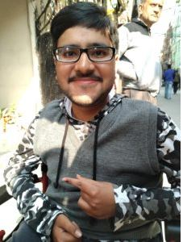

Dr.Sarthak Kamath
MBBS, MD(Psychiatry)
Asst Professor in the Department of Psychiatry at B R Ambedkar
Medical College, Bangalore.

TEDx by Dr.Sarthak

Karan Vaidya
System engineer in TCS
MSC digital Forensic And Information Security
in national Forensic university .
System engineer in TCS
MSC digital Forensic And Information Security
in national Forensic university .

Sarthak Gawri
12th standard from National Institute of Open Schooling (NIOS)
Working as a freelancer as a web-developer .
12th standard from National Institute of Open Schooling (NIOS)
Working as a freelancer as a web-developer .